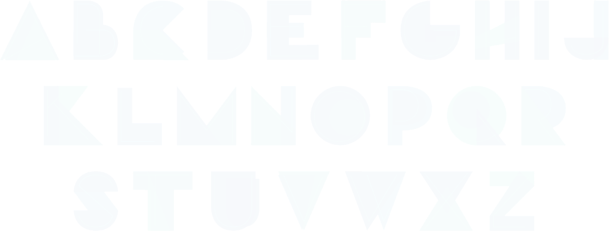

Touch Typing
Touch typing is a style or technique of typing that is said to be the fastest or the most efficient on then present keyboard layout. It is the technique that any anyone aspiring to be proficient in typing must know.
This technique is often referred to as blind typing, because the person doesn't rely on his vision to look at keys and find specific letter to type. Muscle memory is utilized by the person to type, and this enables saving time that is wasted in individually looking for specific keys and their positions.
Touch typing provides phonics training helpful to dyslexic children
Typing helps dyslexic children break up words into smaller sounds. This familiarizes a child with what letters make what sound.
Touch typing employs multi-sensory learning and develops muscle memory.
This technique is multi-sensory. It links sight and hearing to touch. It also develops muscle memory, very useful when learning letter patterns and spelling.
Touch typing makes writing easier for children who have handwriting difficulties such as dysgraphia.
Children with dysgraphia may find holding a pen difficult and painful. Touch-typing eliminates this difficulty allowing them to focus on their work.
Touch typing is faster than handwriting
Touch typing leads to fluency using a keyboard. When a person has mastered touch typing, they will have more time to focus on their ideas when working.
Typing Technicalities: